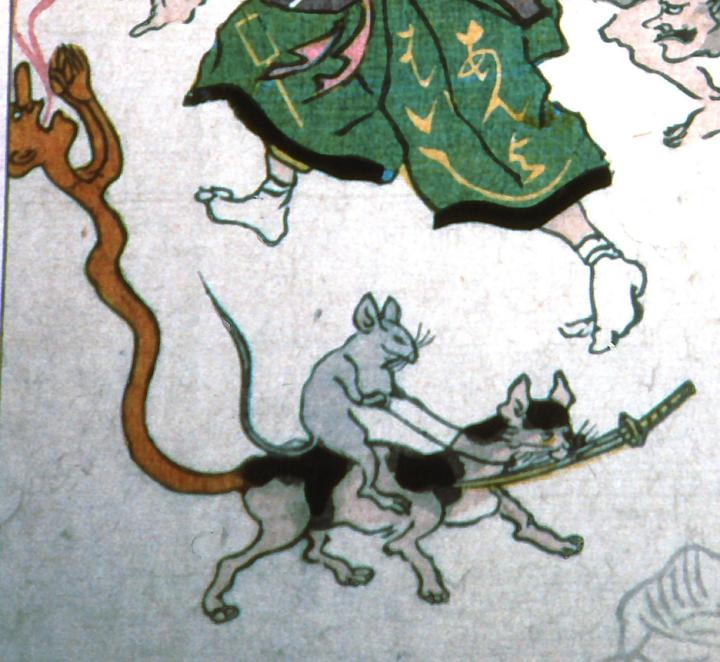

← 图鉴索引

刀をくわえた猫に跨る鼠。猫の尻からは茶色い男がでて、両手を合わせて何かを唱えている。
出典：親書誌：A5_pushkin_0021：こしをしの図；コシオシノズ／日付：2011／資源識別子：A5_pushkin_0021_0003_0000
Copyright (c)2010- International Research Center for Japanese Studies, Kyoto, Japan. All rights reserved.